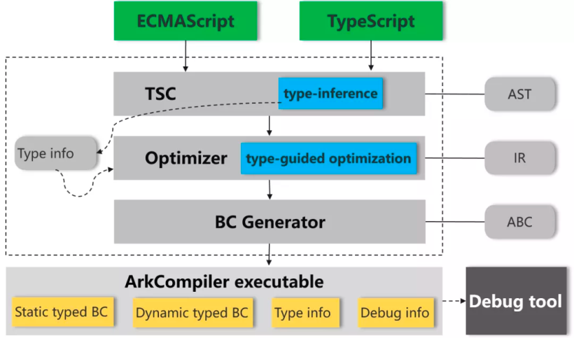
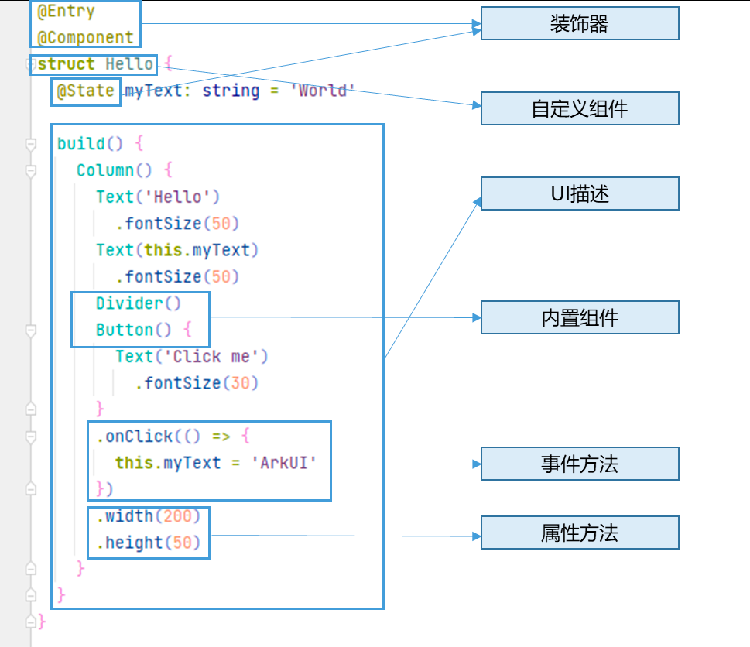
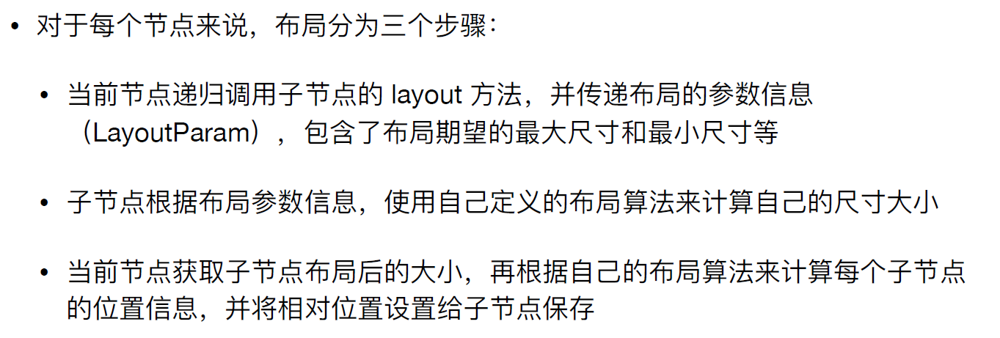
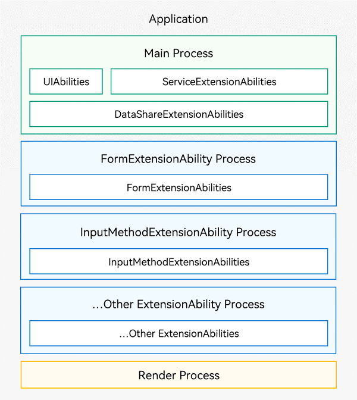
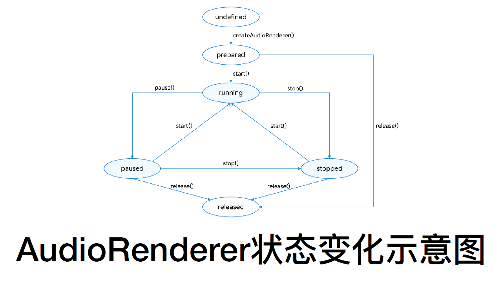

移动互联网软件工程
移动互联网软件工程
1. 快速入门
HMS（HUAWEI Mobile Services，华为移动服务）则是华为公司推出的⼀系列服务的合集
HarmonyOS的核心技术理念：一次开发，多端部署；可分可合，自由流转；统一生态，原生智能
Harmony OS应用支持：1. 需要下载安装的应用，2. 轻量级，具备免安装，即用即走，服务直达，自由流转等关键特征的元服务（不支持快应用和Web网站）
如果开发者在原生应用版本的基础上，想要提供多种服务给用户，最优选是开发多个元服务，按需组合为一个复杂的应用
当用户希望能够在多个设备间来回切换、完成多个任务，开发者可以使用以下哪个核心能力，以便应用不间断地给用户提供服务的能力：自由流转
多设备按需分发
两种打包上架模式：
- 开发态代码共享，应用和服务生命周期完全独立
- 开发态代码共享，应用和服务生命周期完全共享
系统架构
- HarmonyOS采用分层结构，⼤致可以分为内核层、系统服务层、框架层和应用层
- 内核层
- 内核层是整个操作系统的核心，提供操作系统最基础的服务，主要分为内核子系统和驱动子系统
- 与Android不同的是，HarmonyOS除了可以支持Linux内核之外，还可以支持多种不同的操作系统，为支持多种不同的设备提供了便利并提高了效率
- 对于设备驱动的问题，HarmonyOS则是利用驱动子系统中的硬件驱动框架（HDF，Hardware Driver Framework）提供了统⼀的外设访问能力和驱动开发管理框架
- 系统服务层：HarmonyOS的核心能力集合，通过框架层对应用程序提供服务
- 系统基础能力子系统：为分布式应用在HarmonyOS多设备上的运行、调度、迁移等操作提供了基础能力。
- 基础软件服务子系统：主要是⼀些设备之间公共的、通用的软件服务。
- 增强软件服务子系统：提供针对不同设备的、差异化的能力增强型软件服务。
- 硬件服务子系统：提供硬件服务，由位置服务、生物特征识别、穿戴专有硬件服务、IoT专有硬件服务等子系统组成。
- 框架层：提供了⽤户语⾔框架、Ability框架和UI框架
- ⽤户语⾔框架支持了Java/C/C++/JS等多种编程语⾔
- Ability框架则是对系统服务能力的⼀种抽象的框架
- Harmony的UI框架提供了适⽤于JS语⾔的JS UI框架
- 应用层：包括系统应用和扩展应用/第三方非系统应用
一次开发，多端部署
- 为了实现这一目的，HarmonyOS需要提供的能力：多端开发环境；多端开发能力；多端分发机制
APP结构 重要
- 在开发态，⼀个应⽤包含⼀个或者多个Module，可以在DevEco Studio⼯程中创建⼀个或者多个Module
- Module是HarmonyOS应用/服务的基本功能单元，包含了源代码、资源文件、第三⽅库及应⽤/服务配置⽂件，每⼀个Module都可以独⽴进行编译和运行
- Module分为“Ability”和“Library”两种类型，“Ability”类型的Module对应于编译后的HAP（Harmony Ability Package）；“Library”类型的Module对应于HAR（Harmony Archive），或者HSP（Harmony Shared Package）
- HAP：
stage模型 重要
- 在基于Stage模型开发的应用项目代码下，都存在⼀个app.json5及⼀个或多个module.json5这两种配置文件
- app.json5：主要包含应用的全局配置信息，包含应用的包名、开发厂商、版本号等基本信息。特定设备类型的配置信息。
- module.json5主要包含：
- Module的基本配置信息，例如Module名称、类型、描述、支持的设备类型等基本信息。
- 应用组件信息，包含UIAbility组件和ExtensionAbility组件的描述信息。
- 应⽤运行过程中所需的权限信息。
- Stage模型原生支持组应用组件级的跨端迁移和多端协同，体现在：Albility与Ul分离、UI展示与服务能力合一的Ability组件
- Stage模型支持多设备形态和多窗口形态，体现在以下方面：Ability生命周期定义、组件管理和窗口管理解耦
- Stage模型的优势
- 在基于Stage模型开发的应用项目代码下，都存在⼀个app.json5及⼀个或多个module.json5这两种配置文件
UIAbility生命周期 重要
UIAbility启动模式 重要
- singleton（单实例模式）：默认启动模式
- standard（标准实例模式）：每次启动UIAbility组件，都会创建一个新的该类型实例
- specified（指定实例模式）：支持拉起指定标识的实例
Want 重要
- Want类型
- 显式Want：在启动Ability时指定了abilityName和bundleName的Want称为显式Want。当有明确处理请求的对象时，通过提供目标Ability所在应用的bundleName，并在Want内指定abilityName便可启动目标Ability。显式Want通常用于在当前应用开发中启动某个已知的Ability。
- 隐式Want：在启动UIAbility时未指定abilityName的Want称为隐式Want。用于希望调用其他应用的某个服务又不关心是哪个应用提供的该服务，系统将匹配声明支持该请求的所有应用
- 隐式Want的action和entities
- Want类型
HiLog日志
- HiLog⽇志系统可以让应⽤按照指定类型、指定级别、指定格式字符串打印⽇志内容，帮助开发者了解应用/服务的运行状态，更好地调试程序。
- HiLog提供了debug、info、warn、error以及fatal接口，在购物应用中，我们使用hilog打印EntryAbility 、DetailsAbility的⽣命周期。
多HAP机制
设计目标
- 方便开发者模块化的管理应⽤
- 方便开发者将多HAP合理地组合并部署到不同的设备上
- 方便开发者按需加载所需模块，减少包大小
- 方便应用资源共享，减少程序包大小
所有的HAP最终会编译到一个App Pack中
多HAP场景下，同一应用的所有HAP的签名证书必须保持一致
开发者可以将⼀个应用的某些HAP配置成按需加载。应用在启动阶段初始用不到的特性，可以配置暂不加载，当用户用到这些特性时，可由应用自动下载这些特性HAP
当多HAP如果运行在同一进程，多HAP间组件的通信方式与同一HAP内组件的通信方式相同
HAR与HSP 重要
- OpenHarmony提供了两种共享包，HAR静态共享包和HSP动态共享包，实现代码和资源的共享，包含代码、C++库、资源和配置文件
- HAR中的代码和资源跟随使用方编译，如果有多个使用方，它们的编译产物中会存在多份相同拷贝
- HSP中的代码和资源可以独立编译，运行时在一个进程中代码也只会存在一份
- HAR属于编译态复用，HSP属于运行态复用
2. ArkTS
- 不考代码，这部分略过
3. Ark Compiler 和 Ark Runtime
- 类型推导 重要
- 
- 方舟编译运行时 重要
- 方舟字节码
- ArkCompiler寄存器要求能够放置对象引用和基本类型，宽度采⽤64位。
- 累加寄存器acc，俗称累加器，是⼀个特殊的寄存器，被指令隐含使用。上⼀条指令利用累加器作为结果输出，下⼀条指令将此累加器作为输入，可以有效改善指令密度，减小字节码的尺寸
- ArkCompiler字节码提供对32位（i32）和64位（i64）整型数值的寄存器操作⽀持，8位和16位数值通过扩展到32位来模拟。支持对IEEE-754双精度浮点f64值的寄存器的操作，f32数据类型（IEEE-754单精度）也通过转换为f64值进行模拟。
- ArkCompiler通过特殊的标记值（“Any”）表示动态类型值
- 源文件中所有使⽤到的模块命名空间（module namespace）都会被编译进⼀个数组中
- ArkCompiler会把ArkTS/TS/JS编译为方舟字节码，运行时直接运行方舟字节码
- 方舟字节码中，除寄存器和累加器之外，还存在4种值存储方式：全局变量、模块命名空间和模块变量、词法环境和词法变量、补丁变量。指令可以使用这4种储值位置中的值作为入参
- Ark Runtime执行引擎 重要，看JIT和AOT区别
- 解释器：可直接运行前端编译器输出的字节码
- JIT Compiler（Just-In-Time）：JIT编译器⼀般需要运行时执行代码⼀段时间，Profiler⽣成了profiling数据之后，根据profiling数据即时编译生成高质量的机器码来运行。
- AOT Compiler（Ahead of Time）：AOT编译器则是在运行前根据静态信息直接编译生成高质量的目标机器码在设备上运行，PGO配置文件可以作为AOT Compiler的输入之⼀，给AOT Compiler⼀些指示，比如编译的范围以及编译某个方法时使用哪些优化技术。
4. Ark UI
基本概念
- 装饰器：用来装饰类、结构体、方法以及变量，赋予其特殊的含义，如上述示例中 @Entry 、 @Component 、 @State 都是装饰器。
- @Component：装饰struct，结构体在装饰后具有基于组件的能力，需要实现build⽅法来创建UI。
- @Entry： 装饰struct，组件被装饰后作为页面的入口，页面加载时将被渲染显示。
- @Preview：装饰struct， 用@Preview装饰的⾃定义组件可以在DevEco Studio的预览器上进行实时预览，加载页面时，将创建并显示@Preview装饰的自定义组件。
- 自定义组件：可复用的 UI 单元，可组合其它组件，如上述被 @Component 装饰的 struct Hello。
- struct：自定义组件可以基于struct实现，不能有继承关系，对于struct的实例化，可以省略new。
- UI描述：声明式的方法来描述UI的结构，例如build()方法中的代码块。
- 内置组件：ArkTS中默认内置的基本组件和布局组件，开发者可以直接调用，如Column、Text、Divider、Button等。
- 属性方法：用于组件属性的配置，统⼀通过属性方法进行设置，如fontSize()、width()、height()、color() 等，可通过链式调用的方式设置多项属性。
- 事件方法：用于添加组件对事件的响应逻辑，统⼀通过事件方法进行设置，如跟随在Button后面的onClick()。
- 
- 装饰器：用来装饰类、结构体、方法以及变量，赋予其特殊的含义，如上述示例中 @Entry 、 @Component 、 @State 都是装饰器。
组件生命周期 重要
- @Entry装饰的组件才有页面生命周期
- 页面生命周期，即被@Entry装饰的组件生命周期，提供以下生命周期接口：
- onPageShow：页面每次显示时触发。
- onPageHide：页面每次隐藏时触发⼀次。
- onBackPress：当用户点击返回按钮时触发。
- 组件生命周期，即⼀般用@Component装饰的⾃定义组件的生命周期，提供以下生命周期接口：
- aboutToAppear：组件即将出现时回调该接口，具体时机为在创建自定义组件的新实例后，在执行其build()函数之前执行。
- aboutToDisappear：在自定义组件即将析构销毁时执行。
- @Entry装饰的组件才有页面生命周期
布局结构 重要
布局元素的组成
组件区域（蓝区⽅块）：组件区域表明组件的大小，width、height属性设置该区域的大小。
组件内容区（黄色方块）：组件区域大小减去组件的padding值，组件内容区大小会作为组件内容（或者子组件）进行大小测算时的布局测算限制。
组件内容（绿色方块）：组件内容本身占用的大小，比如文本内容占用的大小。组件内容和组件内容区不⼀定匹配，比如设置了固定的width和height，此时组件内容区大小就是设置的width和height减去padding值，但⽂本内容则是通过文本布局引擎测算后得到的大小，可能出现文本真实大小小于设置的组件内容区大小。当组件内容和组件内容区大小不⼀致时，align属性⽣效，定义组件内容在组件内容区的对齐方式，如居中对齐。
组件布局边界（虚线部分）：组件通过margin属性设置外边距时，组件布局边界就是组件区域加上margin的大小。
router
- 调用router.pushUrl接口，目标页不会替换当前页，而是压入页面栈，保留当前页的状态。此时当前Index页面隐藏，执行页面生命周期Index onPageHide。
- 如果调用的是router.replaceUrl，目标页会替换当前页，当前Index页面被销毁，执行的生命周期流程将变为：Index onPageHide –> MyComponent aboutToDisappear –> Child aboutToDisappear
- 两种实例模式
- Standard：标准实例模式，也是默认实例模式。每次调用都会新建一个目标页并压入栈顶
- Single：单实例模式，如果目标页的url在栈中已经存在，则离栈顶最近的同url页面会被移动到栈顶，并重新加载；如果目标页的url在栈中不存在，则按照标准模式跳转
For Each
- 在ForEach循环渲染过程中，系统会为每个数组元素生成⼀个唯⼀且持久的键值，用于标识对应的组件。当这个键值变化时，ArkUI框架将视为该数组元素已被替换或修改，并会基于新的键值创建⼀个新的组件
- ForEach必须在容器组件内使用。
- ⽣成的子组件应当是允许包含在ForEach父容器组件中的子组件。
- 允许子组件生成器函数中包含if/else条件渲染，同时也允许ForEach包含在if/else条件渲染语句中。
- itemGenerator为数组中的每个元素创建对应的组件，为必选参数；keyGenerator为数据源arr的每个数组项生成唯一且持久的键值，不是必选参数
Navigation
- ⼀般作为页面的根容器，包括单页面、分栏和自适应三种显示模式
- 默认显示模式是自适应模式，自适应模式下，若设备的宽度大于520vp，Navigation组件采用分栏模式，反之采用单页面模式
ArkUI框架 重要
对于声明式开发范式组件，根据组件从前端到后端的过程，可以将整个框架划分为EtsLoader，JsView, ComPonent,RenderNode四个模块。
- EtsLoader：负责解析ets页面，根据组件的tag标签创建对应的JsView对象，⽣成jsView树。
- JsView：负责处理组件的属性，⽅法和事件。并通过Create函数创建对应的Component树。
- ComPonent：负责将Component树中所有继承自RenderComponent的节点（可绘制节点）创建对应的RenderNode节点，生成对应的RenderNode树
- RenderNode：RenderNode即可绘制的节点，负责组件的最终布局和绘制。
Component树、Element树、Render树
Component树：
- 定义：Component树描述的是应用中所有组件的层级结构。它是由应用中的每一个组件组成的树状结构，每个组件可以包含子组件。
- 特点：它代表了组件的嵌套关系，不包含DOM节点，仅仅是逻辑上的结构，表示组件如何组合和排列。
- 作用：帮助理解组件之间的关系、组件的嵌套结构，以及如何通过父组件和子组件的关系来组织应用。
Element树：
- 定义：Element树是从组件的 JSX（React）或模板（Vue）中生成的，包含了组件实例化后的原始元素对象。它是虚拟DOM中的表示，描述了界面中所有的“元素”。
- 特点：Element树是虚拟DOM的一部分，包含每个组件的渲染结果。它的结构和组件树类似，但它是更接近渲染的“表现形式”，也就是说，它包含了实际将会渲染到页面上的元素结构。
- 作用：Element树用于虚拟DOM的比较和更新，帮助决定哪些元素需要更新、添加或删除。
Render树：
- 定义：Render树是经过样式计算之后的DOM树的一个表示，包含了所有将要渲染的DOM元素及其样式（包括CSS属性）。
- 特点：它是浏览器内部渲染流程中的一部分，只有经过计算得到的实际渲染样式后，才会被用于渲染最终的页面。它是根据Element树的内容生成的，结合了CSS样式，描述了页面将如何渲染出来。
- 作用：Render树的创建与更新决定了页面的最终视觉展示。浏览器通过它来绘制界面。
类Web开发范式组件：对于类Web开发范式组件，根据组件从前端到后端的过程，可以将整个框架划分为JsFrameWork，DomNode, ComPonent, RenderNode四个模块。
- JsFrameWork：负责解析前端html和css文件，创建出DomNode树。该树的结构和前端页面是⼀⼀对应的。
- DomNode：负责将Dom树转换为Component树。
在开发一款新应用时，推荐采用声明式开发范式来构建UI
- 
同布局⼀样，绘制也是⼀个深度遍历的过程，遍历调用每个 RenderNode 的 Paint 方法，此时的绘制只是根据布局算出来的大小和位置，在当前绘制的上下文记录每个节点的绘制命令。为了提高性能，这里引入了图层（Layer）的概念。通常绘制会将渲染内容分为多个层进行加速。
光栅化合成机制
- UI 线程（UI Thread）在渲染管线中的输出是 LayerTree，它相当于⼀个⽣产者，将⽣产的 LayerTree 添加到渲染队列中。GPU 线程（GPU Thread）的合成器（Compositor）相当于消费者，每个新的渲染周期中，合成器会从渲染队列中获取⼀个 LayerTree 进⾏合成消费。
- 对于需要缓存的 Layer,还要执⾏光栅化⽣成 GPU 纹理，所谓光栅化就是将 Layer ⾥⾯记录的命令进⾏回放，⽣成每个实体的像素的过程。像素是存储在纹理的图形内存中。
- 合成器会从系统的窗⼝中获取当前的 Surface，将每个 Layer ⽣成的纹理进⾏合成，最终合成到当前 Surface 的图形内存（Graphic Buffer）中。这块内存中存储的就是当前帧的渲染结果内容。最终还需要将渲染结果提交到系统合成器中合成显示。
大前端框架
5. 移动互联网应用需求分析
- 需求分析的层次性 重要
- 传统信息系统软件需求的分层：业务需求、用户需求、系统需求
- 移动互联网领域考虑三个层次
- 战略：起步、发展、成熟、扩展、新业务
- 产品：⼀致性的体验、符合战略思路、落实技术功能
- 功能
- 涉众分析 重要
- 移动互联网应用用户的特点：用户都是大规模，不确定的，易变，更短抉择，随性，常规涉众分析方法不是很有效
- 需求获取 重要
- 需求获取的传统方法：面谈、问卷、观察、文档分析、调研、原型、民族志
- 移动互联网需求获取
- “上线”原型法：运营数据分析、数据统计、数据挖掘、用户模拟
- 竞品分析：抄袭法
- 移动互联网需求组织方法 重要：User Story & 技术故事、Behavior Specification
6. Ability Kit, Network Kit, ArkData, ArkWeb
- Ability Kit
- Ability Kit（程序框架服务）提供了应用程序开发和运行的应用模型，是系统为开发者提供的应用程序所需能力的抽象提炼，它提供了应用程序必备的组件和运行机制。
- UIAbility是系统调度的最小单元。UIAbility的启动分为两种情况：UIAbility冷启动和UIAbility热启动 重要
- UIAbility冷启动：指的是UIAbility实例处于完全关闭状态下被启动，这需要完整地加载和初始化UIAbility实例的代码、资源等。
- UIAbility热启动：指的是UIAbility实例已经启动并在前台运行过，由于某些原因切换到后台，再次启动该UIAbility实例，这种情况下可以快速恢复UIAbility实例的状态，只会触发该UIAbility的onNewWant() 回调
- Network Kit
- 使用网络管理模块的相关功能时，需要请求相应的权限：ohos.permission.GET_NETWORK_INFO(允许获取网络连接信息)和ohos.permission.INTERNET(允许程序打开网络套接字进行网络连接)
- request接口开发步骤
- ResponseCode.GONE的值为410，表示客户端请求的资源已经不存在
- ResponseCode.NOT_FOUND的值为404，表示服务器无法根据客户端的请求找到资源（网页）
- A : HEAD请求的响应格式与GET请求相同，只是响应主体为空，所以可以用于获取资源的元数据、检查资源是否存在。 B : DELETE请求可以请求服务器删除指定的资源。 C : GET请求可以向服务器获取资源，GET请求可以携带参数。 D : POST请求向指定资源提交数据进行处理请求
- A : http请求支持get、post、put等常用的请求方式。 B : 可以使用on(‘headersReceive’)订阅请求响应头。 C : post请求的参数可以在extraData中指定。 D : 执行createHttp成功后，返回一个httpRequest对象，里面包括request、destroy、on和off方法。
- http请求request接口中请求可选参数：A : method B : extraData C : expectDataType D : readTimeout
- Ark Data
- 持久化
- 用户首选项（Preferences） 重要：提供了轻量级配置数据的持久化能力，并支持订阅数据变化的通知能力。不支持分布式同步，不遵循ACID特性，常用于保存应用配置信息、用户偏好设置等。
- 开发者可以将用户首选项持久化文件的内容加载到Preferences实例，然后使用flush()方法写入持久化文件中实现数据持久化。每个文件唯—对应到—个Preferences实例
- 使用用户首选项持久化数据的正确流程：getPreferencesSync()获取用户首选项实例，putSync()方法保存数据到缓存的Preferences实例，flush()持久化数据
- 用户首选项Key不可以重复，通过has()方法判断首选项中是否包含指定的key，保证指定的key不会被重复保存
- 键值型数据管理（KV-Store）：提供了键值型数据库的读写、加密、手动备份以及订阅通知能力。键值型数据库事件回调方法中不允许进行阻塞操作
- 关系型数据管理（RelationalStore）：提供了关系型数据库的增删改查、加密、手动备份以及订阅通知能力。
- 用户首选项（Preferences） 重要：提供了轻量级配置数据的持久化能力，并支持订阅数据变化的通知能力。不支持分布式同步，不遵循ACID特性，常用于保存应用配置信息、用户偏好设置等。
- 分布式交互
- 分布式数据对象（DataObject）：独立提供对象型结构数据的分布式能力
- 跨应用数据管理（DataShare）：提供了数据提供者provider、数据消费者consumer以及同设备跨应用数据交互的增、删、改、查以及订阅通知等能力。
- 统⼀数据管理框架（UDMF）：提供了数据跨应用、跨设备交互标准
- 数据管理服务（DatamgrService）：提供其它部件的同步及跨应用共享能力
- 关系型数据库相关
- 关系型数据库导入的模块是@ohos.data.relationalStore
- RdbStore提供管理关系数据库方法的接口，通过getRdbStore获得一个相关的RdbStore，操作关系型数据库
- ResultSet提供用户调用关系型数据库查询接口之后返回的结果集合
- 数据库配置StoreConfig中encrypt指定数据库是否加密，默认不加密
- 持久化
- Core File Kit
- 文件类型
- 应用文件：文件所有者为应用，包括应用安装文件、应用资源文件、应用缓存文件等。
- 用户文件：文件所有者为登录到该终端设备的用户，包括用户私有的图片、视频、音频、文档等。
- 系统文件：与应用和用户⽆关的其它文件，包括公共库、设备文件、系统资源文件等。系统文件及其目录对于应用是只读的
- 文件系统分类
- 本地文件系统：提供本地设备或外置存储设备（如U盘、移动硬盘）的文件访问能力
- 分布式文件系统：提供跨设备的文件访问能力。所谓跨设备，指文件不⼀定存储在本地设备或外置存储设备，而是通过计算机网络与其它分布式设备相连
- 对于每个应用，系统会在内部存储空间映射出⼀个专属的“应用沙箱目录”，它是“应用文件目录”与⼀部分系统文件（应用运行必需的少量系统文件）所在的目录组成的集合，代表应用可见的所有目录范围
- 应用之间可以通过分享URI（Uniform Resource Identifier）或文件描述符FD（File Descriptor）的方式，进行文件共享
- 用户需要分享文件、保存图片、视频等用户文件时，开发者可以通过系统预置的文件选择器FilePicker，实现该能力。通过Picker访问相关文件，将拉起对应的应用，引导用户完成界面操作，接口本身无需申请权限。picker获取的uri只具有临时权限，获取持久化权限需要通过FilePicker设置永久授权方式获取。包含PhotoViewPicker、DocumentViewPicker、AudioViewPicker
- File Access Framework是一套提供给开发者访问和管理用户文件的基础框架，提供了一套统一访问用户文件的方法和接口
- File Access Helper提供给文件管理器和文件选择器访问用户文件的API接口
- File Access ExtensionAbility提供文件访问框架能力，由UserFileManager和ExternalFileManager组成
- UserFileManager是内卡文件管理服务， ExternalFileManager是外卡文件管理服务
- 文件类型
- Ark Web
- Web组件生命周期 重要
- 当Controller成功绑定到Web组件时触发该回调onControllerAttached事件
- 当Web组件加载url之前触发onLoadIntercept，默认允许加载
- onInterceptRequest事件用于拦截url并返回响应数据
- onPageEnd事件只在主frame触发
- Web组件提供的页面加载方式
- 加载网络页面
- 加载本地页面
- 加载HTML格式的富文本数据
- Web组件生命周期 重要
7. 移动互联网设计架构
架构目标：高可用性、高可扩展性、低成本、多快好省
架构组成
业务架构设计原则
- 业务平台化
- 核心业务、非核心业务分离
- 隔离不同类型的业务
- 区分主流程、辅流程
应用架构设计原则：稳定性原则、解耦/拆分、抽象化、松耦合、容错设计
数据架构设计原则
技术架构设计原则：
- 运行时：可监控；应用可回滚，功能可降级；在线扩容；安全保证；可容错；可故障转移
- 部署时
MVC、MVP和MVVM 重要
MVC模式
- 模型：存储内容
- 视图：显示内容
- 控制器：处理用户输入
MVP和MVVM：MVC的改良
Functional Reactive Programming （FRP）
8. 进程与线程
- 高可用
- 负载均衡与反向代理
- 隔离
- 限流
- 降级
- 超时与重试机制
- 回滚
- 压测和预案
- 高并发 和高可用一样，看ppt去吧
- 应用级缓存
- HTTP缓存
- 连接池
- 异步并发
- 扩容
- 队列
- 异步并发 重要
- Promise和async/await提供异步并发能力，是标准的JS异步语法。异步代码会被挂起并在之后继续执行，同⼀时间只有⼀段代码执行，适用于单次I/O任务的场景开发
- Promise是⼀种用于处理异步操作的对象，有三种状态：pending（进行中）、fulfilled（已完成）和rejected（已拒绝）
- 并发模型 TaskPool和Worker重要
- 并发模型是用来实现不同应用场景中并发任务的编程模型，常见的并发模型分为基于内存共享的并发模型和基于消息通信的并发模型。
- Actor并发模型是基于消息通信并发模型的典型代表
- 当前ArkTS提供了TaskPool和Worker两种并发能力，TaskPool和Worker都基于Actor并发模型实现
- 运行时间超过3分钟（不包含Promise和async/await异步调用的耗时，如网络下载、文件读写）的任务需要使用Worker
- 需要设置优先级的任务需要使用TaskPool
- 应用间跳转
- 应用跳转是指从⼀个应用跳转至另外⼀个应用，传递相应的数据、执行特定的功能
- 应用跳转的两种类型
- 拉起指定应用：拉起方应用明确指定跳转的目标应用，来实现应用跳转。指向性跳转可以分为指定应用链接、指定Ability两种方式。
- 拉起指定类型的应用：拉起方应用通过指定应用类型，拉起垂类应用面板
- 进程模型 重要
- 
- Background Tasks Kit
- 设备返回主界面、锁屏、应用切换等操作会使应用退至后台。系统会对退至后台的应用进行管控，包括进程挂起和进程终止。
- 后台任务类型
- 短时任务：适用于实时性要求高、耗时不长的任务，例如状态保存。
- 长时任务：适用于长时间运行在后台、用户可感知的任务，例如后台播放音乐、导航、设备连接等，使用长时任务避免应用进程被挂起。
- 延迟任务：对于实时性要求不高、可延迟执行的任务，系统提供了延迟任务，即满足条件的应用退至后台后被放入执行队列，系统会根据内存、功耗等统⼀调度。
- 代理提醒：代理提醒是指应用退后台或进程终止后，系统会代理应用做相应的提醒。适用于定时提醒类业务，当前支持的提醒类型包括倒计时、日历和闹钟三类。
- IPC机制
9.系统工具库
- Ark UI 的窗口
- 窗口模块用于在同一块物理屏幕上，提供多个应用界面显示、交互的机制。
- 对应用开发者而言，窗口模块提供了界面显示和交互能力。
- 对终端用户而言，窗口模块提供了控制应用界面的方式。
- 对整个操作系统而言，窗口模块提供了不同应用界面的组织管理逻辑。
- HarmonyOS的窗口模块将窗口界面分为系统窗口、应用窗口两种基本类型。
- 创建应用子窗口后，应先设置子窗口属性，然后加载显示子窗口的具体内容，最后在不需要时销毁子窗口
- 实现沉浸式效果有两种方式，一是调用 setWindowSystemBarEnable 接口，设置导航栏、状态栏不显示；二是调用 setWindowLayoutFullScreen 接口，设置应用主窗口为全屏布局，再调用 setWindowSystemBarProperties 接口设置相关属性
- 窗口模块用于在同一块物理屏幕上，提供多个应用界面显示、交互的机制。
- Basics Service Kit的账号管理
- 应用开发者可以使用应用账号SDK管理本应用的账号数据。
- 能力限制：应用卸载场景下，被卸载应用的账号数据会被删除；本地账号删除场景下，被删除本地账号下的所有应用的账号数据会被删除。
- Audio Kit（音频服务）
- Audio Kit（音频服务）亮点特征包括空间音频、低时延播放、音振协同、低功耗播放等
- 音频量化的过程：采样 > 量化 > 编码
- 音频播放API
- AudioRenderer：用于音频输出的ArkTS/JS API，仅支持PCM格式，需要应用持续写入音频数据进行工作。应用可以在输入前添加数据预处理，如设定音频文件的采样率、位宽等，要求开发者具备音频处理的基础知识，适用于更专业、更多样化的媒体播放应用开发。
- AudioHaptic：用于音振协同播放的ArkTS/JS API，适用于需要在播放音频时同步发起振动的场景，如来电铃声随振、键盘按键反馈、消息通知反馈等。
- OpenSL ES：一套跨平台标准化的音频Native API，同样提供音频输出能力，仅支持PCM格式，适用于从其他嵌入式平台移植，或依赖在Native层实现音频输出功能的播放应用使用。
- OHAudio：用于音频输出的Native API，此API在设计上实现归一，同时支持普通音频通路和低时延通路。仅支持PCM格式，适用于依赖Native层实现音频输出功能的场景。
- AVPlayer：用于音频播放的ArkTS/JS API，集成了流媒体和本地资源解析、媒体资源解封装、音频解码和音频输出功能。可用于直接播放mp3、m4a等格式的音频文件，不支持直接播放PCM格式文件
- SoundPool：低时延的短音播放ArkTS/JS API，适用于播放急促简短的音效，如相机快门音效、按键音效、游戏射击音效等。
- 
- AudioRenderer 开发步骤，首先应配置音频渲染参数并创建 AudioRenderer 实例，然后调用 on (‘writeData’) 方法订阅监听音频数据写入回调，接着调用 start () 方法开始渲染音频，在需要停止时调用 stop () 方法，最后调用 release () 方法销毁实例
- Camera Kit 重要
- 相机工作流程包括相机输入设备管理、会话管理和相机输出管理
- 拍照模块中，设置拍照参数可以调整闪光灯、变焦、焦距、照片质量及旋转角度等信息
- 如果开发者仅是需要拉起系统相机拍摄一张照片、录制一段视频，可直接使用CameraPicker，无需申请相机权限，直接拉起系统相机完成拍摄。应用可以自行选择媒体类型实现拍照和录制功能。该类接口需要应用在界面 UIAbility 中调用。从 API version 12 开始，该接口支持在元服务中使用。
- Image Kit
- 相关概念
- 图片解码：指将所支持格式的存档图片解码成统一的PixelMap，以便在应用或系统中进行图片显示或图片处理。
- PixelMap：指图片解码后无压缩的位图，用于图片显示或图片处理。
- 图片编码：指将PixelMap编码成不同格式的存档图片，用于后续处理，如保存、传输等。
- 图片处理：指对PixelMap进行相关的操作，如旋转、缩放、设置透明度、获取图片信息、读写像素数据等。
- 开发过程
- 获取图片：通过应用沙箱等方式获取原始图片。
- 创建ImageSource实例：ImageSource是图片解码出来的图片源类，用于获取或修改图片相关信息。
- 图片解码：通过ImageSource解码生成PixelMap。
- 图片处理：对PixelMap进行处理，更改图片属性实现图片的旋转、缩放、裁剪等效果。然后通过Image组件显示图片。
- 图片编码：使用图片打包器类ImagePacker，将PixelMap或ImageSource进行压缩编码，生成一张新的图片。
- 使用 ImageSource 完成图片解码的步骤：首先获取 resourceManager 资源管理，然后创建 ImageSource，接着创建 pixelMap，最后释放 pixelMap
- 相关概念
- ArkGraphics 2D
- ArkGraphics 2D 能力范围包括图像处理基本能力、管理色域对象能力、指定帧率能力以及图形绘制与显示相关的 Native 能力。
- 使用@ohos.graphics.drawing模块的画布画笔绘制基本的2D图形和文字：
- 创建RenderNode子类。创建RenderNode子类MyRenderNode，并在其中定义绘图函数。RenderNode中包含树结构的操作，以及对绘制属性的操作，其中draw方法会在RenderNode进行绘制时被调用
- 构建Path形状。使用path的moveTo，lineTo和close接口构建
- 设置画笔和画刷样式。使用Pen接口创建一个画笔实例pen，并设置抗锯齿、颜色、线宽等属性，画笔用于形状边框线的绘制。使用Brush接口创建一个画刷实例brush，并设置填充颜色，画刷用于形状内部的填充。使用canvas中的attachPen和attachBrush接口将画笔画刷的实例设置到画布实例中
- 绘制Path形状。使用canvas中的drawPath接口绘制到画布上
- 创建MyRenderNode对象。以上1到4步构建出了MyRenderNode类并在其中定义了绘图的主要函数，接下来创建一个MyRenderNode对象，并设置它的像素格式。
- 绘制矩形/文字。使用canvas中的drawRect接口绘制矩形，drawTextBlob接口绘制文字
- 创建NodeController子类。创建NodeController的子类MyNodeController，并在其中定义创建FrameNode的函数。NodeController定义了节点容器的控制器，控制着容器里在生命周期中的节点。FrameNode定义了节点的基本类型，并包含一个RenderNode。
- 创建添加节点的接口。在第7步中创建的MyNodeController类中创建添加RenderNode的接口。
- 创建删除节点的接口。在第7步中创建的MyNodeController类中创建删除RenderNode的接口。
- 绘制图形和文字。创建MyNodeController实例并将其存入NodeContainer，添加button控件供用户点击，并调用已定义的接口。
- Sensor Service Kit 重要
- Sensor Service Kit（传感器服务）使应用程序能够从传感器获取原始数据，并提供振感控制能力。包括Sensor（传感器）模块和Vibrator（振动）模块
- 传感器运作机制
- Form Kit 重要
- Form Kit（卡片开发服务）提供一种界面展示形式，可以将应用的重要信息或操作前置到服务卡片，以达到服务直达、减少跳转层级的体验效果。卡片常用于嵌入到其他应用（只支持系统应用，例如桌面）中作为其界面显示的一部分，并支持拉起页面、发送消息等基础的交互能力。支持在卡片中运行逻辑代码（ArkTS 卡片）
- 卡片使用步骤：长按 “桌面图标”，弹出操作菜单，点击 “服务卡片” 选项，进入卡片预览界面，再点击 “添加到桌面” 按钮
10. 敏捷软件开发
- Scrum
- WIP（working in progress）
- WIP太高，工作闲置
- WIP太低，人员闲置

11. 从微服务到云原生
- 微服务架构的特征
- 通过服务组件化
- 围绕业务能力组织：只把业务逻辑强制放在它们会访问的应用程序中
- 是产品不是项目：负责产品的整个生命周期，持续关注软件如何帮助用户提升业务能力
- 智能端点和哑管道：最常用的两种协议是使用资源API的HTTP请求-响应；在轻量级消息总线上传递消息
- 去中心化治理、去中心化数据管理
- 基础构建管道
- 为失效设计：应用程序需要被设计成能够容忍服务失效
12. 高级特性
- 自动化测试框架
- 自动化测试框架arkxtest，作为工具集的重要组成部分，支持JS/TS语言的单元测试框架(JsUnit)及UI测试框架(UiTest)。JsUnit提供单元测试用例执行能力，提供用例编写基础接口，生成对应报告，用于测试系统或应用接口。UiTest通过简洁易用的API提供查找和操作界面控件能力，支持用户开发基于界面操作的自动化测试脚本。
- 脚本基础流程运行图
- NDK开发
- NDK（Native Development Kit）是HarmonyOS SDK提供的Native API、相应编译脚本和编译工具链的集合，方便开发者使用C或C++语言实现应用的关键功能。
- NDK只覆盖了HarmonyOS一些基础的底层能力，如C运行时基础库libc、图形库、窗口系统、多媒体等
- NAPI对比JNI